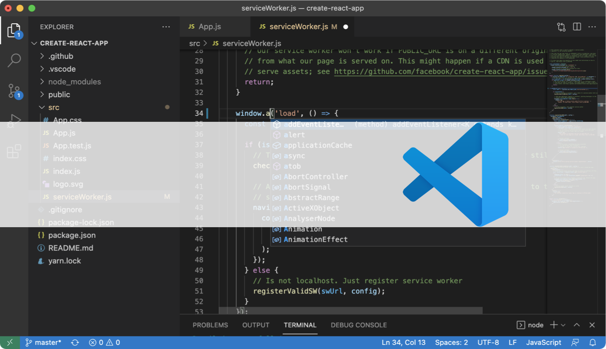

Quarto
Le mot de la fin
today

Quelques exemples

Quelques exemples

Les packages
 tout un écosystème…
tout un écosystème…
Quarto se présente comme le nouveau système open-source
de publication d’articles scientifiques and techniques
dans le but de rendre le process de création
et de collaboration radicalement plus simple


The R Markdown ecosystem
Quarto: Next generation R Markdown

Quarto highlights
 Consistent implementation of attractive and handy features across outputs: tabsets, code-folding, syntax highlighting, etc.
Consistent implementation of attractive and handy features across outputs: tabsets, code-folding, syntax highlighting, etc.
 More accessible defaults as well as better support for accessibility
More accessible defaults as well as better support for accessibility
Guardrails, particularly helpful for new learners: YAML completion, informative syntax errors, etc.
 Support for other languages like Python, Julia, Observable, and more via Jupyter engine for executable code chunks.
Support for other languages like Python, Julia, Observable, and more via Jupyter engine for executable code chunks.
Quarto CLI orchestrates
each step of rendering

Quarto enables contributing
from our current tools



Quarto flattens the learning curve

Quarto can grow with learners in a profound way

Quarto ?
Version \(\beta\) disponible depuis Avril 2022 + révélation de Quarto lors de la Conférence RStudio cet été

Plusieurs définitions:
“Open-source scientific and technical publishing system”
“Next generation of
R Markdown”“Language agnostic Command Line Interface”

Pourquoi Quarto ?
- Homogénéiser et étendre Rmarkdown

- Donner accès à ce genre d’outils à un public plus large
Créer un notebook
Une fois l’installation faite, comment lancer Quarto?


Créer un notebook
Une fois l’installation faite, comment lancer Quarto?

Créer un notebook
Une fois l’installation faite, comment lancer Quarto?
New documents :
 :::
:::
Observable.hq migration
install ohq2quarto from github: Save an Observable HQ Notebook to a Quarto project

step 1 : use the import command

Terminal
cargo run -- --ohq-ref @hrbrmstr/just-one-more-thing --output-dir ./examples --verboseSay hello to Quarto!
Pick up where we left off: github.com/mine-cetinkaya-rundel/hello-quarto-demo
rstudio::conf(2022) – Quarto deep dive:
- Tracy Teal - These are a few of my favorite things (about Quarto presentations)
- Hamel Husain - Literate Programming With Jupyter Notebooks and Quarto
- Devin Pastoor - Websites & Books & Blogs, oh my! Creating Rich Content with Quarto
Video: Openscapes: Hello Quarto with NASA Openscapes, RLadies Santa Barbara, and JJ Allaire
Quarto documentation: quarto.org
Quarto gallery: quarto.org/docs/gallery
Quarto tip a day: rstd.io/quartotip

Annotated Notes: Reimagine
FayLab Manual
Quarto Mosaic
See also: 3 takeaways for planning for the year of open science

Footnotes
pas posible pour les slides…
problème pour la faire fonctionner en revealjs et html…
solution pour publier des sites web, proposée par Quarto (Posit)
Probablement d’autres aspects sympas, mais pas d’expérience sur ces formats.
Comment ça fonctionne ?
Workflow Quarto
Quels languages ?
R;
Python;
Julia;
et Observable.
Quels IDE ?
Avantage: Quelque soit le language ou l’IDE utilisé(e), la syntaxe pour formater les documents reste la même.